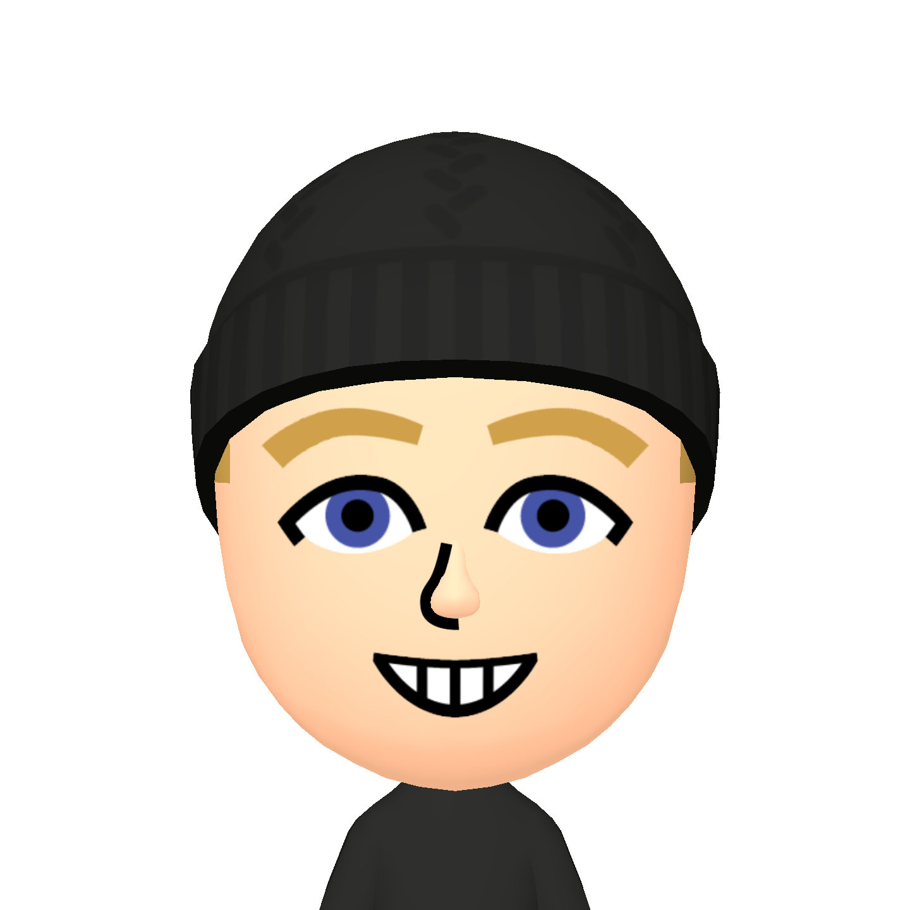

The Mac (Owen Mackenzie)
Yo wsg good chat, its Mac here! I’ve started this new blog and decided to share some info of all of the questions you wanted to ask me at the rally. Some of the most asked questions were about my age and what I love. I’m only 13. Too long to not get eaten by a polar bear. I love my hometown. Churchill, Manitoba is one of the best places for me and to be eaten by a polar bear. I also love my best friend, my cheese as some would say. He was there when we both got mauled by a polar bear, and has been my best friend for 13 years. We both also love our YouTube channel. We upload every week for you guys and this blog will probably be the bts of it. I think the mac is best known as the noodle, but for now it's from my last name. I think that people will know me for my leg having many scars and pulling down my pant-.
Well you if you have ever seen me on the job I am always making jokes. I love making jokes with people I just met, especially when I get tips when I'm doing my job and almost dying with my best friend. I can also be very impulsive, George always has to save me from being in trouble because of my impulsive actions.